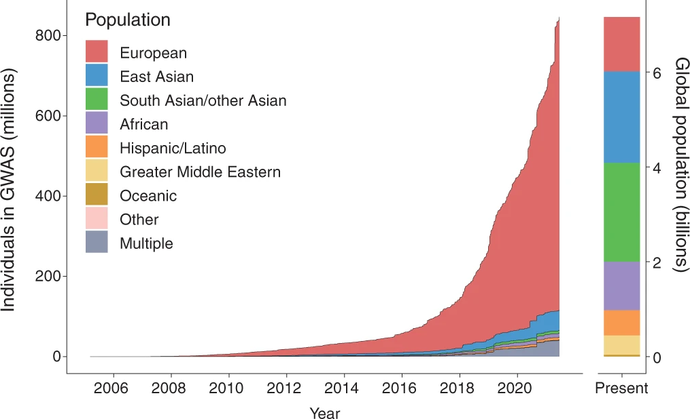

Adapted from my TEDxUBC talk, May 2025.
Before medical school, I worked as a genome analyst at Vancouver General Hospital. My job was to read the DNA of cancer patients and decide which mutations mattered: which ones explained the cancer, and which ones might point to a treatment.
One day a sample came in from a woman of East African descent. We ran every test we had and found her mutations. Then we tried to interpret them, and the databases we relied on had almost nothing to say. They had been built mostly from people of European ancestry, and her variants were rare or absent in them.
The report went back to her oncologist with those mutations labelled "variants of uncertain significance." That label didn't mean they were unimportant. It meant nobody had collected enough data from people like her to know.
I have thought about that report a lot since. Nothing went wrong in the lab. The sequencing worked. What failed was the reference library behind it.
A map drawn from one continent
Most of what we know about how genetic variants affect disease comes from genome-wide association studies, which compare the DNA of large numbers of people with and without a condition. As of 2021, about 86 percent of the participants in those studies were of European descent, up from 81 percent in 2016. People of African ancestry made up about 1.1 percent and people of South Asian ancestry about 0.8 percent, despite being a large share of the world's population.1

Imagine drawing a world map using only roads surveyed in Europe, then handing it to someone in Lagos or Lima. Some of it would be right. A lot of it would be confidently wrong, and the person holding it would have no way to tell which parts.
Genetic tools work the same way. A polygenic risk score adds up thousands of small genetic effects to estimate someone's risk of a disease like heart attack or type 2 diabetes. In 2019, Alicia Martin and colleagues showed that the scores available at the time were several times more accurate in people of European ancestry than in anyone else.2 Use one of those scores in a clinic and it will work best for the patients who were already best served.
What gets found when you look
The gap is not only about accuracy. It is about which questions get asked at all.
Podoconiosis is a disabling swelling of the legs that affects people who walk barefoot for years on irritant red-clay soil formed from volcanic rock. It is common in parts of highland Ethiopia. Only some exposed people develop it, and it clusters in families, with an estimated heritability of 63 percent. In 2012, a team led by the Ethiopian geneticist Fasil Tekola Ayele ran a genome-wide study of podoconiosis in Ethiopian families and found that variants in the HLA class II region, which shapes how the immune system presents antigens, raise the risk. That finding suggested the disease may be driven by an inflammatory immune response to the soil.3 Nobody would have found that by studying people in Europe, because people in Europe don't get podoconiosis.
The same thing happened in kidney disease. Variants in a gene called APOL1 were already known to raise the risk of kidney failure in Black Americans, and the standard view was that you needed two copies to be at risk. In 2025, the H3Africa Kidney Disease Research Network reported on 8,355 people in Ghana and Nigeria. Nearly 30 percent carried two risk copies. But people with just one copy also had higher odds of chronic kidney disease, by about 18 percent.4 Studying the population where these variants are most common changed what we thought we knew about them.
Race is the wrong label
It is tempting to think the fix is simply to sequence more people in each racial group. But race is a poor guide to genetics.
In 2002, Noah Rosenberg and colleagues analysed genetic markers in 1,056 people from 52 populations around the world. Differences between individuals within the same population accounted for 93 to 95 percent of human genetic variation. Differences between major continental groups accounted for only 3 to 5 percent.5 Genetic ancestry is real and tracks geography, but the boxes we tick on forms, like Black, White or Asian, carve it up badly.
Africa is the clearest example. Humans have lived there longest, and the people who left to populate the rest of the world carried only part of that diversity with them. As a result, African populations hold more genetic diversity than any other.16 Treating "African" as one category throws away exactly the variation that makes those genomes so informative.
Ancestry: where a person's biological ancestors came from, which can be estimated from their DNA.
Race: a social category based on perceived physical traits such as skin colour. It has no precise biological basis but has real social and historical consequences.
Ethnicity: a shared cultural identity that may include common ancestry, language, traditions or history.
Nationality: a legal identity, describing citizenship of a country.
A new reference
There is a deeper problem underneath the databases. Every human genome sequenced today is compared against a reference genome, and for two decades that reference was a patchwork stitched together from a small number of anonymous donors.7 Wherever someone's DNA differed substantially from that patchwork, the analysis tools struggled.
That has started to change. In 2022 the Telomere-to-Telomere consortium, co-led by Karen Miga, whom I was lucky enough to meet, published the first gapless sequence of a human genome, filling the roughly 8 percent the old reference was missing.8 In 2023, the Human Pangenome Reference Consortium released a draft pangenome built from 47 complete genomes from genetically diverse people. Instead of one linear sequence, it stores many versions of each region side by side. Analysing short-read data against it cut small-variant errors by 34 percent and roughly doubled the number of structural variants found in each genome.9
Who is closing the gap
The most encouraging work is being led by the communities that were left out.
H3Africa funded African scientists to run large genomic studies on diseases that matter in their own countries, including the kidney study above. In Pakistan, the PARKH study aims to recruit 30,000 people with psychiatric conditions and 15,000 controls.1 In Canada, the Silent Genomes Project is building a genetic variant library with Indigenous communities and under Indigenous governance, so that the people whose DNA is studied decide how it is used.10 In the United States, the All of Us Research Program set out to enrol at least a million people. By 2019, more than 80 percent of those who had joined came from groups historically underrepresented in biomedical research.11
None of this is quick, and none of it works without trust. Communities that have been studied without benefit, or without consent, have good reason to be wary. The projects that succeed share leadership, share data on the community's terms, and share whatever comes out of it.
I think often about the woman whose report came back full of uncertainty. With a bigger, more diverse library, her variants might have been interpretable. Maybe one of them would have pointed to a treatment. Precision medicine can only be as precise as the people it has learned from, and for most of the world we are only now starting to collect the data.